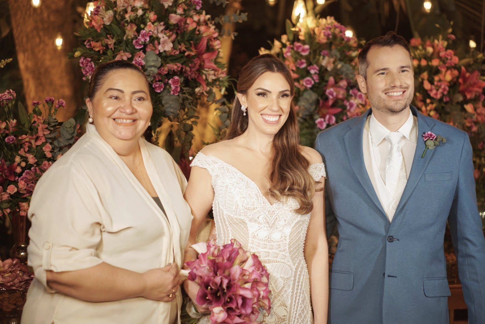
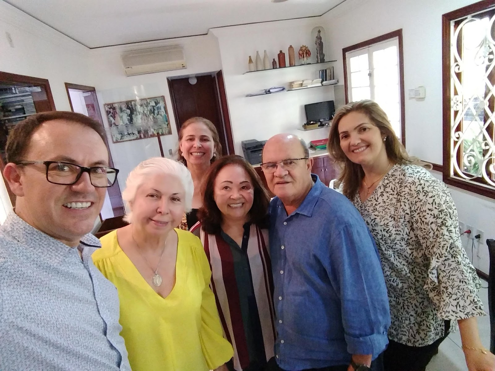
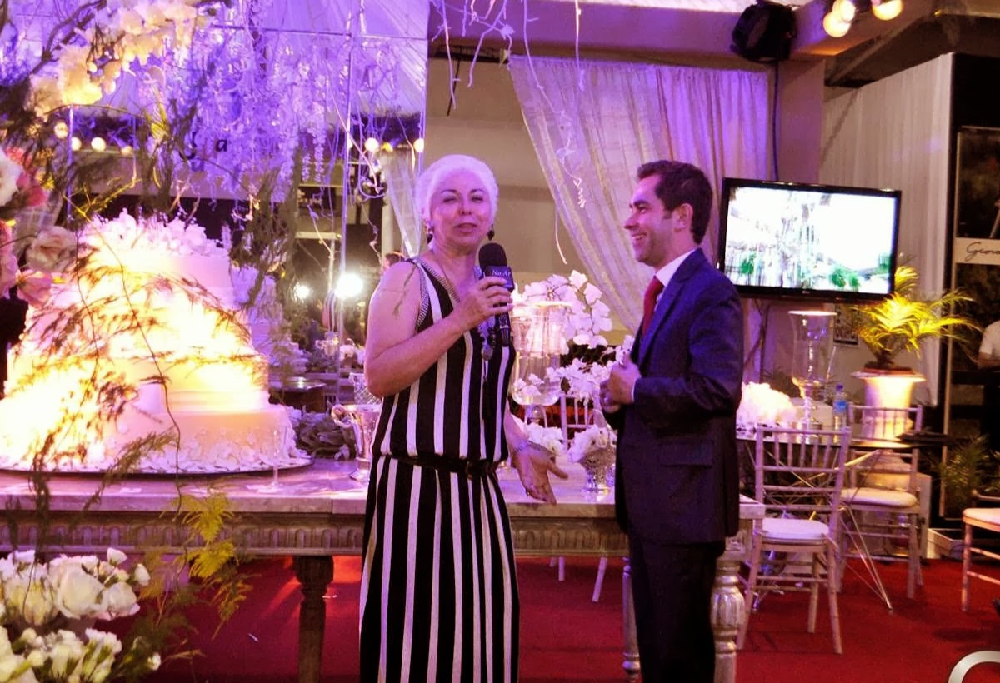

Experiência, conhecimento das tradições e criatividade para inovar. A Alódia Guimarães Eventos cuida do seu casamento ou da sua festa com o compromisso de quem tem clientes e colegas de profissão como fãs.

Experiência e profissionalismo você encontra aqui.
Guilherme · avaliação no Google
Há quem tenha crescido ouvindo falar do trabalho da Alódia e acabado virando cerimonialista também. É esse o tamanho da história por trás de cada evento: uma casa que se tornou referência para quem trabalha com festas em Fortaleza.
No dia a dia, isso se traduz em algo simples: compromisso com os clientes, respeito às tradições de cada família e vontade de fazer diferente quando o momento pede.
O escritório fica no Joaquim Távora, com entrada acessível para cadeira de rodas.

Palavras de quem já realizou eventos com a casa.
Cada cliente acompanhado com seriedade, do primeiro encontro até o fim da festa.
Conhecimento dos ritos, das etiquetas e dos costumes que deixam a celebração no lugar certo.
Ideias novas para que o seu evento tenha a sua cara, sem perder a elegância.

Roteiro, entradas, fornecedores e convidados no compasso certo. Enquanto a cerimonialista cuida de tudo, você e sua família vivem o momento.
Realizar eventos com Alódia e Samyra Guimarães é ter a certeza de sucesso absoluto. Compromisso com os clientes, conhecimento das tradições e a criatividade para inovar nunca falta por aqui.
Eliana · avaliação no GoogleExperiência e credibilidade. Um ícone do Cerimonial no Ceará.
Fabiana · avaliação no GoogleCresci ouvindo sobre o trabalho dela, acabei me tornando fã e cerimonialista também. É uma grande referência para todos que trabalham no setor de eventos sociais em Fortaleza.
Débora · avaliação no GoogleSe você busca um evento perfeito! A Alódia Guimarães é sinônimo de perfeição e excelência!
Jéssica · avaliação no GoogleExcelência, seriedade e compromisso com os clientes!
Avaliação no GoogleTrechos de avaliações públicas no Google.
Cinco perguntas rápidas e você recebe um cronograma sugerido. No fim, suas respostas seguem organizadas para o WhatsApp da Alódia Guimarães Eventos.
Chame no WhatsApp e conte a data e o tipo de evento. Se preferir, marque uma visita ao escritório.